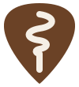

libre-apps.org
Free apps that are worth using. Apps livres que valem a pena usar.
We build open source apps that solve a real problem and do it well. No ads, no account you do not need, no data collected just because it can be.
Fazemos apps de código aberto que resolvem um problema de verdade, e resolvem bem. Sem publicidade, sem conta que você não precisa e sem coletar dado só porque dá.
-
Real valueValor de verdade
Every app starts from a need someone actually has.
Todo app nasce de uma necessidade que alguém tem de fato.
-
QualityQualidade
Tested, documented and cared for long after the first release.
Testado, documentado e cuidado muito depois da primeira versão.
-
RespectRespeito
No ads, no tracking, and only the data the app needs to work.
Sem anúncio, sem rastreamento e só o dado que o app precisa para funcionar.
-
AI friendlyAmigos da IA
We use AI openly to build free and open technology, faster and better.
Usamos IA abertamente para construir tecnologia livre e gratuita, mais rápido e melhor.
ProjectsProjetos
What we maintain O que mantemos
-
OpenEmux
A retro game library inspired by OpenEmu. Point it at your ROMs and get covers, per console settings and RetroArch under the hood.
Uma biblioteca de jogos retrô inspirada no OpenEmu. Aponte para as suas ROMs e ganhe capas, ajustes por console e o RetroArch por baixo.
-

OpenTuner
A simple tuner for ukulele, guitar, bass and their cousins. No ads, no tracking, no account, no internet.
Um afinador simples para ukulele, violão, baixo e parentes. Sem anúncio, sem rastreamento, sem conta e sem internet.
-
SLAP Mobile
Asset inventory that works with no internet and no server. Every phone holds the whole inventory and syncs with the others over the local Wi-Fi.
Inventário patrimonial que funciona sem internet e sem servidor. Cada celular carrega o inventário inteiro e sincroniza com os outros pelo Wi-Fi local.
PeoplePessoas
Who is behind it Quem está por trás
Guilherme Feitoza
Founder and maintainerFundador e mantenedor
Software engineer for nearly two decades, working across web, mobile and desktop. Builds and maintains every app listed here.
Engenheiro de software há quase duas décadas, entre web, mobile e desktop. Cria e mantém todos os apps desta página.